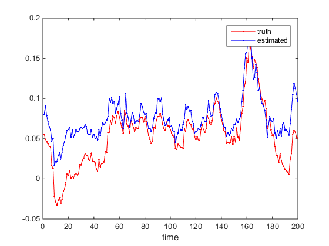

Contents
Step (1) Generate Data from Garch-DCC model
K = 10; % dimension of time series T = 200; % time series length burnIn = 1000; % parameters for modelling the volatility of each dimension as a Garch(1,1) process theta = [0.01 0.05 0.9]; % parameters for conditional correlations para = [0.05 0.93]; % generate data with true DCC model % r = T-by-K data matrix % H0: K*K*T matrix containing H_1,...,H_T, where H_t is the true conditional covariance matrix at time t. % R0: K*K*T matrix containing R_1,...,R_T, where R_t is the true conditional correlation matrix at time t. [ r, H0, R0 ] = generateData( K, T, theta, para, burnIn ); r = r - repmat(mean(r),T,1); % demean
Step (2) Parameter Setting
(2.1) original dcc
allpair = 0; parallel = 0; % (2.2) all bivariate pairs dcc % allpair = 1; parallel = 0; % No parallel % OR % allpair = 1; parallel = 1; parpool; % Parallel mode
Step (3) Run DCC_X, DCC_X_mex (faster on Windows 64bit/Mac)
tic [ H,R,Theta,X ] = DCC_X( r, allpair, parallel ); toc tic [ H,R,Theta,X ] = DCC_X_mex( r, allpair, parallel ); toc
Elapsed time is 2.903232 seconds. Elapsed time is 1.506071 seconds.
Step (4) compare estimate H,R with true value H0,R0
i = 1; j = 2; figure plot(1:T,squeeze(H0(i,j,:)),'r.-',1:T,squeeze(H(i,j,:)),'b.-') xlabel('time') legend('truth','estimated')